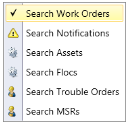

Work Management
The Work Management section can be used to search work items such as work orders, notifications, assets, Meter Service Requests (MSRs), trouble orders, and Flocs. The user can open a work item; view the work details; and perform operations around a work item such as subscribing to a work item, updating work item details, adding the work item to the timesheet, adding comments, managing attachments, linking work items, updating the work status, and printing work item details.
The Work Management tab consists of the following sub tabs:
-
Search
-
Upgrade User
-
Share Inbox
-
Manage Subscriptions
-
Status Log
-
Create MSR

Search
The user can use the Search menu to do the following:
-
Search Work Orders
-
Search Notifications
-
Search Assets
-
Search Flocs
-
Search Trouble Orders
-
Search MSRs
Search Work Orders
Search Work Orders
- In the IWMS Client application, click the Work Management tab. The Work Management group is displayed.

- In the Work group, click Search.
- The Search menu is displayed.
 - Click Search Work Orders.
Enter the search work order details in the following fields.
| Field | Description |
|---|---|
| Work Type Dropdown | Select a work type. The user can select multiple work types. If the user wants all the work types in the list to be considered for the search, click Clear Selection. The work types are made available to the user as per the user role. |
| Region Dropdown | Select a region. Based on the region the user selects, the District and the Assigned To lists are populated. |
| Sector Dropdown | Select a sector. A sector is a type of region (AOR) that is a parent of a district. |
| District Dropdown | Select a district. The user can select multiple districts. If the user wants all the districts in the list to be considered for the search, click Clear Selection. |
| Assigned To Dropdown | Select an assignee. |
| WO # Field | Type a work order number. |
| Note: | Keep the WO # box empty if the user is not aware of the work order number. The user can locate the required work order number from the search results. |
| Operation # Field | Type an operation number. |
| Note: | Keep the Operation # box empty if the user is not aware of the operation number. The user can locate the required operation number from the search results. |
| Status Dropdown | Select a status. The user can select multiple statuses. If the user wants all the statuses in the list to be considered for the search, click Clear Selection. |
| Note: | Select the Complete check box to select those values that denote completion. Selecting the Complete checkbox selects the associated statuses in the Status list. Select the Incomplete checkbox to select those values that denote in-progress. Selecting the Incomplete checkbox selects the associated statuses in the Status list. |
| Substation Dropdown | Select a substation. |
| Address Field | Type an address. |
| City Field | Enter a city name. |
| Structure # Field | Enter a structure number. |
| Line Device # Field | Enter a line device number. |
| Due Date Field | Select the From date and the To date. |
| Completion Date Field | Select the From date and the To date. |
| Start Date Field | Select the From date and the To date. |
| Equipment # Field | Enter an equipment number. |
| Year Due Dropdown | Select a year. |
| Priority Dropdown | Select a priority. |
| Dist/Trans Dropdown | Select Distribution or Transmission. Based on the value the user selects, the Equipment Type list is populated. |
| Equipment Type Dropdown | Select an equipment type. The user can select multiple equipment types. If the user wants all the equipment types in the list to be considered for the search, click Clear Selection. |
| Component Dropdown | Select a component. The user can select multiple components. If the user wants all the components in the list to be considered for the search, click Clear Selection. |
| Elevation Dropdown | Select an elevation. The user can select multiple elevation values. If the user wants all the elevation values in the list to be considered for the search, click Clear Selection. |
| Condition Dropdown | Select a condition. The user can select multiple conditions. If the user wants all the conditions in the list to be considered for the search, click Clear Selection. |
| Created by Field | Enter the work order creator's name. |
| OMS Ref.# Field | Enter the OMS reference number. |
| FIM Num field | Enter the FIM Number. |
- Click Search.

The work orders that match the search criteria entered in the earlier
steps are displayed in the grid.
Search Server
The user can use the Search Server feature to fetch records from the server database, if the search criteria that the user provides cannot fetch any records from the client database. This feature comes handy when the client data and the server data are not synchronized. It allows The user to still search the records. Before the system searches the server for records, it waits for the confirmation to search the records on the server.
Search the server.
-
In the IWMS Client application, open the Search Work Orders page.
-
On the Search Work Orders page, enter the search criteria in the fields.
-
Click Search server.
The system fetches the records that match the search criteria from the server and displays the records in the grid.
Excel Export
The user can use the Excel Export button to export the searched records to a Microsoft Excel file. The user can select the required items from the grid or can export all the items to a Microsoft Excel file.
Export the reports to Excel.
-
In the IWMS Client application, open the Search Work Orders page.
-
On the Search Work Orders page, enter the search criteria in the fields.
-
Click Search.
-
The work orders that match the search criteria are displayed in the grid.
Do one of the following:- Click Excel Export to export all the displayed records in a
-
Microsoft Excel file.
-
Select the checkboxes adjacent to the work orders The user want
- to export, and then click Excel Export to export the
- selected records in a Microsoft Excel file.
-
The Please choose an output file name dialog box is displayed. In the File Name box enter a filename.
-
Click Save.
A Microsoft Excel file is displayed with the exported records.
Copy to Inbox
The user can use the Copy to Inbox feature to pick records from the grid and assign the tasks to self. The user can view all such records in the Unassigned Work folder in the Inbox. The user may want to use this feature in the event they have finished existing work and have time to take additional work.
Copy to inbox.
-
In the IWMS Client application, open the Search Work Orders page.
-
On the Search Work Orders page, enter the search criteria in the
-
fields.
-
Click Search.
-
The work orders that match the search criteria are displayed in the
- grid. In the search grid, select the checkboxes adjacent to the
- work orders to copy to the Inbox, and then click Copy To Inbox to
-
copy the selected records to the Inbox.
-
A dialog box is displayed.
-
Click OK to copy the work orders to the Inbox.
The selected work orders can be viewed in the Unassigned Work folder in the Inbox page.
Subscribe
The user can use the Subscribe button to subscribe to selected work orders and track them. When a work order subscribed by The user is updated in the system, the user gets a message for every update in the Messages folder in the Inbox. The user can select multiple work orders while subscribing.
Subscribe ot work order.
-
In the IWMS Client application, open the Search Work Orders page.
-
On the Search Work Orders page, enter the search criteria in the fields.
-
Click Search.
-
The work orders that match the search criteria are displayed in the grid. In the search grid, select the checkboxes adjacent to the work orders to subscribe, and then click Subscribe to subscribe to the selected records.
The Confirm dialog box is displayed.
- Click OK.
Unsubscribe
The user can unsubscribe from an already subscribed work order. The user no longer receives messages after the user unsubscribes from a work order. The user can select multiple work orders while unsubscribing.
-
In the IWMS Client application, open the Search Work Orders page.
-
On the Search Work Orders page, enter the search criteria in the fields.
-
Click Search.
-
The work orders that match the search criteria are displayed in the grid. In the search grid, select the checkboxes adjacent to the work orders unsubscribe, and then click Unsubscribe to unsubscribe to the selected records.
The Confirm dialog box is displayed.
- Click OK. For more information see, Manage Subscriptions.
View Work Order Details
Work order details page: View info, perform actions based on work type. Standard actions include subscribing, adding to timesheet, validating edits, and releasing.
To view work order details
-
In the IWMS Client application, open the Search Work Orders page.
-
On the Search Work Orders page, enter the search criteria in the fields.
-
Click Search.
-
The work orders that match the search criteria are displayed in the grid. In the search grid, double-click a work order row.
The work order details page is displayed. The user can perform the required actions on this page.
Structure or Equipment
A work order is associated with flocs that link to assets. The information related to the associated flocs and the assets is displayed in this section. The user can select a floc or an asset and perform the various actions possible on that work order.
Standard Activities
The user can use the standard activities to create notifications. The standard activities are displayed as per the asset type and role.
The following are the types of standard activities:
-
Complete Standard Activity
The user can use the Complete Standard Activity section to create and complete notifications. This section contains an Add check box, which The user can use to add a time slice to the timesheet. Selecting the Add check box displays the Add to Timesheet dialog box. If the user is a crew lead, The user can select the crew member for the activity. Selecting the Add check box automatically selects the Create check box.
-
Create Standard Activity
The user can use the Create Standard Activity section to create notifications. The user can create multiple notifications by selecting the checkboxes adjacent to the activities.
The notifications are created when the user clicks save and releases a work order.

Inspector Uninspect asset
The user can use the Inspect or Uninspect feature to mark the inspection status of an asset. The user can use the Inspect feature only with inspection work orders. If an asset is not inspected earlier, the Inspect button is enabled. When The user clicks the Inspect button, the asset is marked as inspected.
If the user wants to change the inspection status of an asset that is
already inspected, The user must click the Uninspect button.
Missing Asset
The user can use the Missing Asset button to create a missing asset notification for a selected asset. After creating a notification, the user can view the notification on the Search Notification page. For more information about searching a notification, see Search Notification.
Found Asset
The user can create a found asset notification for an asset that the user has located in the field but is not available in the system. The Found Asset button is enabled only when a floc is selected in the grid, and a Missing Asset Notification is not created on the asset.
Asset Correction
The user can create an asset correction notification for an existing asset. The Asset Correction button is enabled when an existing asset is selected in the grid.

Repair Needed
The user can create a repair notification for a selected asset. There are two types of repair notifications, namely Create and Find and Fix.
-
Create - The user can create a new notification and release it.
-
Find and Fix - The user can create and complete a new notification.
Create PLC
The user can use the Create Pole Loading Calculation (PLC) tab to create a notification for a selected asset.

Characteristics and Measurements
The user can add information related to the characteristics and measurements of a floc or an asset the user selects. The user needs to select the floc or the asset to view the respective parameters. Depending on whether the user selects an asset or a floc, for the characteristics grid to be displayed. The user can modify the characteristics of an asset, but the characteristics of a floc can only be viewed.
Mandatory characteristics are marked with a red asterisk *. Mandatory characteristics must be filled if the user wants to perform an inspection.
GIS Attributes
The user can view the GIS attributes of an asset or a floc. The asset or the floc must also exist in the GIS database for the data to appear on this screen.
Pending Work
The user can use the Pending Work tab to view any pending work items (not completed or canceled) such as work orders, notifications, and trouble orders. The work items displayed in the pending work tab are related. They can share common information such as the structure number.

Work History
The user can use the Work History tab to view the work items history that has been completed or canceled.
Comments
The user can use the Comments tab to enter comments for a work item. The Comments tab displays all the comments entered earlier in the Comment History section. The user can create a new comment or use the standard comment existing in the Standard Comments list. The user can save a comment using the Save & Release button. The comments can also be exported to a Microsoft Excel file.

Attachments
The user can use the Attachments tab to add, view, update, and remove attachments that are associated with the work item. The user can capture or add images of equipment, repair works, and damages related to a work item in the system. All the existing attachments are displayed in the grid. The user can preview an image in the preview area by selecting it. If an attachment is added for an asset and the asset is searchable in the GIS map, a yellow flag is displayed on the GIS map.
Change Log
If the user or an SAP user updates a work item, this update is recorded as a log. The log provides chronological entries of changes made to a work item. The user can only view the entries in a change log.

Subscribe
The user can use the Subscribe button to subscribe to selected work orders and track them. When a work order subscribed by The user is updated in the system, the user gets a message for every update in the Messages folder of the Inbox. The user can select multiple work orders while subscribing.
Unsubscribe
The user can unsubscribe from an already subscribed item. The user no longer receives messages after the user unsubscribes from an item. The user can select multiple work orders while unsubscribing.

Open Tailboard form
A tailboard form is a document that identifies all known hazards, associated barriers and each worker's responsibilities.
Add to Timesheet
The user can add a work item to the timesheet. The user must open the message and click the Add to Timesheet button. When the user clicks the Add to Timesheet button, the timekeeping page is displayed with filled in information of the work order. The Add to Timesheet button is in the lower part of every work order page.
Timekeeping page displayed:
Complete
A work order can be marked as complete using the Complete button. After a work order is marked as complete, all the sections are disabled for updating. The user can add only comments to a work item that is marked as complete. The Complete button is in the lower part of every work order page.
Save and Validate
The user can use the Save & Validate button to validate the information that is entered in a section. If the information passes validation, the information is saved. The Save & Validate button is in the lower-right part of every work order page.
Save & release.
The user can use the Save & Release button to save any unsaved information on a page, and the information is sent to the server. The Save & Release button is in the lower-right part of every work order page.
Search Notifications
The user can use the Search Notifications page to search the notifications in the IWMS Client. They can use this feature to view notification details and update the required information in a notification. They can use the search fields in combination to narrow down the search and get accurate results. If they try to search notifications without providing any search criteria, the system displays all the available notifications based on assigned AORs.
To search a notification
-
In the IWMS Client application, click the Work Management tab.
-
The Work Management group is displayed. In the Work group, click Search.
-
Click Search Notifications.
-
Enter the search notification details in the following fields.
- Enter the search notification details in the following fields.

| Field | Description |
|---|---|
| Notification Type | Select a notification type. |
| The user can select multiple notification types. If the user wants all the notification types in the list to be considered for the search, click Clear Selection. The notification types are made available to the user as per the user role. | |
| Region | Select a region. |
| Based on the region the user selects, the District list is populated. | |
| Sector | Select a sector. |
| A sector is a type of region (AOR) that is a parent of a district. | |
| District | Select a district. The user can select multiple districts. If the user wants all the districts in the list to be considered for the search, click Clear Selection. |
| SAP Notification ID | Enter an SAP notification ID. |
| CMS Notification ID | Enter a CMS notification ID. |
| Created by | Enter the notification creator's name. |
| Circuit | Select a circuit. |
| The user can select multiple circuits. If the user wants all the circuits in the list to be considered for the search, click Clear Selection. | |
| Substation | Enter a substation name. |
| Repair WO# | Enter the repair work order number. |
| OMS Ref# | Enter the OMS reference number. |
| Address | Type an address. |
| City | Enter a city name. |
| Structure # | Enter a structure number. |
| Line Device # | Enter a line device number. |
| Due Date | Select the From date and the To date. |
| Work Center | Select a work center. |
| FIM Num | Type the FIM number. |
| Keep the FIM Num box empty if the user is not aware of the FIM number. | |
| Notification Status | Select a status. The user can select multiple statuses. If the user wants all the statuses in the list to be considered for the search, click Clear Selection. |
Note: Select the Complete check box to select those values that denote completion. Selecting the Complete check box selects the associated statuses in the Status list. Select the Incomplete check box to select those values that denote in-progress. Selecting the Incomplete check box selects the associated statuses in the Status list. |
|
| Priority | Select a priority. |
| Dist/Trans | Select Distribution or Transmission. Based on the value the user selects, the Equipment Type list is populated. |
| Equipment Type | Select an equipment type. The user can select multiple equipment types. If the user wants all the equipment types in the list to be considered for the search, click Clear Selection. |
| Component | Select a component. The user can select multiple components. If the user wants all the components in the list to be considered for the search, click Clear Selection. |
| Elevation | Select an elevation. The user can select multiple elevation values. If the user wants all the elevation values in the list to be considered for the search, click Clear Selection. |
| Condition | Select a condition. The user can select multiple conditions. If the user wants all the conditions in the list to be considered for the search, click Clear Selection. |
| SAP Equipment Num | Enter an SAP equipment number. |
- Click Search.
The notifications that match the search criteria entered in the earlier steps are displayed in the grid.
View Notification Details
The user can view the notification details by opening the notification details page. The notification details page allows the user to perform the permitted actions on a notification based on the notification type. The user can also perform standard actions such as subscribing or unsubscribing to a notification, adding the notification to the timesheet, validating the updates the user makes to the notification, and releasing the notification to the server.
To view notification details
-
In the IWMS Client application, open the Search Notifications page.
-
On the Search Notifications page, enter the search criteria in the fields.
-
Click Search.
The notifications that match the search criteria are displayed in the grid. In the search grid, double-click a notification row.
The notification details page is displayed. The user can perform the required actions on this page.
Problem info
The Problem Info tab displays the information of a problem reported. The tab displays the problem details such as equipment type, action required, its priority, and name of the circuit where the problem occurred.
Comment
The user can use the Comments tab to enter comments for a work item. The Comments tab displays all the comments entered earlier in the Comment History section. The user can create a new comment or use the standard comment existing in the Standard Comments list. The user can save a comment using the Save & Release button. The comments can also be exported to a Microsoft Excel file.
Attachments
The user can use the Attachments tab to add, view, update, and remove attachments that are associated with the work item. The user can capture or add images of equipment, repair works, and damages related to a work item in the system. All the existing attachments are displayed in the grid. The user can preview an image in the preview area by selecting it. If an attachment is added for an asset and the asset is searchable in the GIS map, a yellow flag is displayed on the GIS map.
Complete or Cancel
The user can use the Complete or Cancel tab to complete a notification using the Completion section. After a work item is marked as complete, all the sections are disabled for update. The user can add only comments to a work item that is marked as complete.
The user can use the Complete or Cancel tab to cancel a notification using the Cancellation section. A notification with status as Created can be canceled.
GIS Attributes
The user can use the GIS Attributes tab to view the GIS attributes of an asset or a floc. The asset or the floc must also exist in the GIS database for the data to appear on this screen.
Change log.
The user can use the Change Log tab to view any update made to a work item by The user or an SAP user, which is recorded as a log. The log provides chronological entries of changes made to a work item. The user can only view the entries in a change log.
Excel Export
The user can use the Excel Export button to export the searched records to a Microsoft Excel file. The user can select the required items from the grid or can export all the items to a Microsoft Excel file.
Copy to inbox.
The user can use the Copy to Inbox feature to pick records from the grid and assign the tasks to the user. The user can view all such records in the Unassigned Work folder of the Inbox. The user may want to use this feature in the event the user has finished the existing work and has time to take additional work.
Subscribe
The user can use the Subscribe button to subscribe to selected notifications and track them. When a notification subscribed by The user is updated in the system, the user gets a message for every update in the Messages folder of the Inbox. The user can select multiple notifications while subscribing.
Unsubscribe
The user can unsubscribe from an already subscribed item. The user no longer receives messages after the user unsubscribes from an item. The user can select multiple notifications while unsubscribing.
Search Assets
Use Search for assets in IWMS Client using the Search Assets page. Narrow results with search fields or view all assets in the AORs.

To search an asset
- In the IWMS Client application, click the Work Management tab.
The Work Management group is displayed.
-
In the Work group, click Search. The Search menu is displayed.
-
Click Search Assets.
The Search Assets page is displayed.
Enter the search assets details in the following fields.
| Field | Description |
|---|---|
| Region Dropdown | Select a region. |
| Based on the region the user selects, the District list is populated. | |
| Sector Dropdown | Select a sector. |
| A sector is a type of region (AOR) that is a parent of a district. | |
| District Dropdown | Select a district. The user can select multiple districts. If the user wants all the districts in the list to be considered for the search, click Clear Selection. |
| Circuit Name Dropdown | Select a circuit. |
| The user can select multiple circuits. If the user wants all the circuits in the list to be considered for the search, click Clear Selection. | |
| Substation Field | Enter a substation name. |
| Equipment Type Dropdown | Select an equipment type. |
| The user can select multiple equipment types. If the user wants all the equipment types in the list to be considered for the search, click Clear Selection. | |
| SAP Equipment # | Enter an SAP equipment number. |
| Structure # Field | Enter a structure number. |
| LineDevice # Field | Enter a Line Device number. |
| FIM Num Field | Enter the FIM Number. |
| Range (ft) Dropdown | Enter a range. |
| Latitude Field | Enter the latitude coordinate. |
| Longitude Field | Enter the longitude coordinate. |
- Click Search.
The assets that match the search criteria entered in the earlier steps are displayed in the grid.
Excel Export
The user can use the Excel Export button to export the searched records to a Microsoft Excel file. The user can select the required items from the grid or can export all the items to a Microsoft Excel file.

Add Comments
The user can use the Add comments button to add comments to the selected assets. The user can type the comments or use standard comments from the list. Save and release button is used to save the comment. Clear comment button is used to clear the comment field.

Repair Needed
The user can create a repair notification for a selected asset. There are two types of repair notifications, namely Create and Find and Fix.
-
Create - The user can create a new notification and release it.
-
Find and Fix - The user can create and complete a new notification.
View Asset Details
The user can view the asset details by opening the asset details page. The user can use the asset details page to perform the permitted actions on an asset such as creating asset-related notifications.
To view asset details
-
In the IWMS Client application, open the Search Assets page.
-
On the Search Assets page, enter the search criteria in the fields.
-
Click Search.
- The assets that match the search criteria are displayed in the grid.
- In the search grid, double-click an asset row.
- The asset details page is displayed. The user can perform the required actions on this page.
Characteristics & Measurements
The user can use the Characteristics & Measurements tab to add information related to the characteristics and measurements of a floc or an asset the user selects. The user needs to select the floc or the asset to view the respective parameters. Depending on whether the user selects an asset or a floc, the characteristics grid is displayed. The user can modify the characteristics of an asset. Mandatory characteristics are marked with a red asterisk *. Mandatory characteristics must be filled if the user wants to perform an inspection.

Pending Work
The user can use the Pending Work tab to view any pending work items (not completed or canceled) such as work orders, notifications, and trouble orders. The work items displayed in the pending work tab are related. They can share some common information such as the structure number.

Comments
The user can use the Comments tab to enter comments for a work item. The Comments tab displays all the comments entered earlier in the Comment History section. The user can create a new comment or use the standard comment existing in the Standard Comments list. The user can save a comment using the Save & Release button. The comments can also be exported to a Microsoft Excel file.
Attachments
The user can use the Attachments tab to add, view, update, and remove
attachments that are associated with the work item. The user can capture
or add images of equipment, repair works, and damages related to a work
item in the system.

location Updates
The user can use the Location Update tab to update the location information of an asset.

GIS Attributes
The user can use the GIS Attributes tab to view the GIS attributes of an asset or a floc. The asset or the floc must also exist in the GIS database for the data to appear on this screen.
Work History
The user can use the Work History tab to view the work items history that has been completed or canceled.
Search Flocs
Use Search flocs in IWMS Client to view associated structures and asset details. Use search fields to refine results or see all flocs in the AORs.

Search Flocs.
- In the IWMS Client application, click the Work Management tab.
The Work Management group is displayed.
- In the Work group, click Search.
The Search menu is displayed.
- Click Search Flocs.
The Search Flocs page is displayed. - Enter the search flocs details in the following fields.
| Field | Description |
|---|---|
| AOR Type Dropdown | Select an AOR Type. Based on the AOR Type the user selects, the AOR list is populated. |
| AOR Dropdown | Select an AOR. Based on the AOR the user selects, the Floc Type list is populated. |
| Floc Type Dropdown | Select a functional location (Floc) type. The user can select multiple floc types. If the user wants all the Floc types in the list to be considered for the search, click Clear Selection. |
| Structure# Dropdown | Select the structure number. |
| Floc Id Dropdown | Select the Floc Id. |
| Range (ft) Dropdown | Enter a range. |
| Latitude Field | Enter the latitude coordinate. |
| Longitude Field | Enter the longitude coordinate. |
- Click Search.
The flocs that match the search criteria entered in the earlier steps are displayed in the grid.
View Floc Details
The user can view the floc details by opening the floc details page. The user can use the floc details page to perform the permitted actions on a floc such as creating floc-related notifications.
To view floc details
-
In the IWMS Client application, open the Search Flocs page.
-
On the Search Flocs page, enter the search criteria in the required fields.
-
Click Search.
-
The flocs that match the search criteria are displayed in the grid. In the search grid, double-click a floc row.
The floc details page is displayed. The user can perform the required actions on this page.

Missing Asset
The user can use the Missing Asset tab to create a missing asset notification for a selected floc. After creating a notification, The user can view the notification on the Search Notification page.

Found Asset
The user can use the Found Asset button to create a found asset notification for an asset that The user has located in the field but is not available in the system. The Found Asset tab is button only when a floc is selected in the grid, and a Missing Asset Notification is not created on the asset.

Asset Correction
The user can use the Asset Correction button to create an asset correction notification for an existing asset. The Asset Correction button is enabled when an existing asset is selected in the grid.
Repair needed.
The user can create a repair notification for a selected asset. There are two types of repair notifications, namely Create and Find and Fix.
-
Create - The user can create a new notification and release it.
-
Find and Fix - The user can create and complete a new notification.
Create PLC
The user can use the Create Pole Loading Calculation (PLC) tab to create a notification for a selected asset.
Inspect
The user can use the Inspect button to mark the inspection status of an asset. The user can use the inspect feature only with inspection work orders. If an asset is not inspected earlier, the Inspect button is enabled. When the user clicks the Inspect button, the asset is marked as inspected. The user can change the inspection status of an already inspected asset by clicking the Uninspect button.
Characteristics and Measurement
The Characteristics & Measurements tab helps The user manage details about things like equipment (assets) and materials (flocs). Here's how it works:
-
Select an asset or floc The user can choose the specific item they want to view or modify.
-
View characteristics: Depending on the selection, the user will see a grid with relevant details about that asset or floc.
-
Modify characteristics (optional): The user can edit the information in the grid.
Pending Work
The user can use the Pending Work tab to view any pending work items (not completed or canceled) such as work orders, notifications, and trouble orders. The work items displayed in the pending work tab are related. They can share some common information such as the structure number.
Comments
The user can use the Comments tab to type comments for a work item. The Comments tab displays all the comments entered earlier in the Comment History box. The user can create a new comment or use the standard comment existing in the Standard Comments list. The user can save a comment by clicking the Save & Release button. The user can also clear the comments by clicking on the clear comments button. The comments can also be exported to a Microsoft Excel file.
Attachments
The user can use the Attachments tab to add, view, update, and remove attachments that are associated with the work item. The user can capture or add images of equipment, repair works, and damages related to a work item in the system.
location Updates
The user can use the Location Update tab to update the location information of an asset.
GIS Attributes
The user can use the GIS Attributes tab to view the GIS attributes of an asset or a floc. The asset or the floc must also exist in the GIS database for the data to appear on this screen.
Search Trouble Orders
The user can use the Search Trouble Orders page to search the trouble orders in the IWMS Client. The user can use this feature to view trouble order details and update the required information in a trouble order. The user can use the search fields in combination to narrow down search and get accurate results. If the user wants to search trouble orders without providing any search criteria, the system displays all the available trouble orders based on the assigned regions.

Search trouble orders.
-
In the IWMS Client application, click the Work Management tab.
-
The Work Management group is displayed.
-
In the Work group, click Search.
The Search menu is displayed.
- Click Search Trouble Orders.
The Search Trouble Orders page is displayed. \ Enter the search trouble order details in the following fields.
| Field | Description |
|---|---|
| Region Dropdown | Select a region. |
| Based on the region the user selects, the District and the Assigned To lists are populated. | |
| Sector Dropdown | Select a sector. |
| A sector is a type of region (AOR) that is a parent of a district. | |
| District Dropdown | Select a district. |
| The user can select multiple districts. If the user wants all the districts in the list to be considered for the search, click Clear Selection. | |
| Assigned To Dropdown | Select an assignee. |
| Sequence # Field | Type a sequence number. Keep the Sequence # box empty if the user is not aware of the sequence number. The user can locate the required sequence number from the search results. |
| Area Field | Type an area name. |
| Status Dropdown | Select a status. |
| The user can select multiple statuses. If the user wants all the statuses in the list to be considered for the search, they must click Clear Selection. | |
| Address Field | Enter an address. |
| City Field | Enter a city name. |
| Structure # Field | Enter a structure number. |
| Line Device # Field | Enter a line device number. |
| Location ID Field | Enter a location ID. |
| Circuit Dropdown | Select a circuit. |
| Substation Field | Select a substation. |
| Problem Code Field | Type a problem code. |
| Due Date Dropdown | Select the From date and the To date. |
| Start Date Dropdown | Select the From date and the To date. |
| Completion Date Dropdown | Select the From date and the To date. |
- Click Search.
The trouble orders that match the search criteria entered in the earlier steps are displayed in the grid.
View Trouble Order Details
View the trouble order details by opening the trouble order details page. The user can also perform standard actions such as subscribing or unsubscribing to a trouble order, adding the trouble order to the timesheet, validating the updates the user makes to the trouble order, and releasing the trouble order to the server.
View trouble order details.
-
In the IWMS Client application, open the Search Trouble Orders page.
-
On the Search Trouble Orders page, enter the search criteria in the required fields.
-
Click Search.
-
The trouble orders that match the search criteria are displayed in the grid. In the search grid, double-click the trouble order row.
The trouble order details page is displayed. The user can perform the required actions on this page.
Missing Asset
The user can use the Missing Asset button to create a missing asset notification for a selected trouble order. After creating a notification, the user can view the notification on the Search Notification page.
Found Asset
The user can use the Found Asset button to create a found asset notification for an asset that the user has located in the field but is not available in the system. The Found Asset button is enabled only when a floc is selected in the grid and a Missing Asset Notification is not created on the asset.
Asset Correction
The user can use the Asset Correction button to create an asset correction notification for an existing asset. The Asset Correction button is enabled when an existing asset is selected in the grid.
Repair Needed
The user can create a repair notification for a selected asset. There are two types of repair notifications, namely Create and Find and Fix.
-
Create - The user can create a new notification and release it.
-
Find and Fix - The user can create and complete a new notification.
Create PLC
The user can use the Create Pole Loading Calculation (PLC) tab to create a notification for a selected asset.
Update Structure
The user can use the Update Structure button to update the structure information of a trouble order. The users are required to provide a structure number to update the structure information. The Floc and Asset grid details are populated when The user updates the structure.
Customer Information
The user can use the Customer Information tab to display the details of the customer mentioned in the trouble order. The Customer Information tab displays information such as the customer's name, contact number, address, and latitude-longitude information.
Work history.
The user can use the Work History tab to view the work items history that has been completed or canceled.
Pending Work
The user can use the Pending Work tab to view any pending work (not completed or canceled) items such as work orders, notifications, and trouble orders. The work items displayed in the pending work tab are related. They can share some common information such as the structure number.
Comments
The user can use the Comments tab to enter comments for a work item. The Comments tab displays all the comments entered earlier in the Comment History section. The user can create a new comment or use the standard comment existing in the Standard Comments list. The user can save a comment using the Save & Release button. The comments can also be exported to a Microsoft Excel file.
linked work.
The user can use the Linked Work tab to link a trouble order with work orders and notifications that exist in the system. The user can link multiple work orders and notifications.
-
Unlink Selected: The user can unlink the work item that is selected in the grid. It can only unlink items that are manually linked by a user.
-
Link Entered IDs: The user can enter an ID belonging to a work item that they want to link with the existing page.
The following image displays the procedure to link work items.
Attachments
The user can use the Attachments tab to capture or add images of equipment, repair works, and damages related to a work item in the system. The user can add, view, update, and remove attachments that are associated with the work item. All the existing attachments are displayed in the grid. The user can preview an image in the preview area by selecting it. If an attachment is added for an asset and the asset is searchable in the GIS map, a yellow flag is displayed on the GIS map.
Complete
The user can use the Complete button to mark a trouble order as complete. After a trouble order is marked as complete, all the sections are disabled for updating. The user can add only comments to a work item that is marked as complete. The Complete button is in the lower part of every work order page.
Change Log
The user can use the Change Log tab to view any update made to a work item by The user or an SAP user, which is recorded as a log. The log provides chronological entries of changes made to a work item. The user can only view the entries in a change log.
Accept
The user can use the Accept button to accept an assigned trouble order. If a trouble order has already been accepted earlier or is suspended, the Accept button remains unavailable.
Reject
The user can use the Reject button to reject an assigned trouble order. If a trouble order has already been rejected earlier, the Reject button remains unavailable.
Suspend
The user can use the Suspend button to suspend a trouble order. The status of the trouble order changes to Suspended.
Add to Timesheet
The user can use the Add to Timesheet button to add a work item to the timesheet. The user has to open the message and click the Add to Timesheet button. When the user clicks the Add to Timesheet button, the Timekeeping page is displayed. The Add to Timesheet button is located in the lower part of every work order page.
Save and Validate
The user can use the Save & Validate button to validate the information that is entered in a section. If the information passes validation, the information is saved. The Save & Validate button is located in the lower-right part of every work order page.
Save and release.
The user can use the Save & Release button to save any unsaved information in a page, and the information is sent to the server. The Save & Release button is located in the lower-right part of every work order page.
Search Meter Service Requests (MSRs)
The user can use the Search MSR page to search the meter service requests (MSRs) in the IWMS Client. The user can use this feature to view the MSR details and update the required information in an MSR. The user can use the search fields in combination to narrow down search and get accurate results. If the user tries to search MSRs without providing any search criteria, the system displays all the available MSRs based on assigned AORs.
Search a Meter Service Request
- In the IWMS Client application, click the Work Management tab.
The Work Management group is displayed.
- In the Work group, click Search.
The Search menu is displayed.
- Click Search MSRs.
The Search MSR page is displayed.
- Enter the search MSR details in the following fields.
| Field | Description |
|---|---|
| MSR Type Dropdown | Select a Meter Service Request type. |
| Based on the Meter Service Request type the user selects, the MSR Sub Type list is populated. | |
| MSR Sub Type Dropdown | Select a Meter Service Request sub type. |
| Region Dropdown | Select a region. |
| Based on the region the user selects, the District and the Assigned To lists are populated. | |
| Sector Dropdown | Select a sector. |
| A sector is a type of region (AOR) that is a parent of a district. | |
| District Dropdown | Select a district. |
| Assigned To Dropdown | Select an assignee. |
| WO # Field | Type a work order number. |
| Keep the WO # box empty if the user is not aware of the work order number. The user can locate the required work order number from the search results. | |
| MSR Status Dropdown | Select a Meter Service Request status. |
| The user can select multiple statuses. If the user wants all the statuses in the list to be considered for the search, they have to click Clear Selection. | |
| Structure # Field | Enter a structure number. |
| From Due Date Dropdown | Select the from date. |
| To Due Date Dropdown | Select the to date. |
| MSR # Field | Enter a Meter Service Request number. |
| Address Field | Enter the address number for a location. |
| City Field | Enter a city name. |
| Non-Standard Field | Type additional information about the address. |
| Meter # Field | Enter a meter number. |
| Created by Field | Enter the Meter Service Request creator's name. |
- Click Search.
The MSRs that match the search criteria entered in the earlier steps are displayed in the grid.
View MSR Details
The user can view the MSR details by opening the MSR details page. The user can use the MSR details page to perform the permitted actions on an MSR. The user can also perform standard actions such as subscribing or unsubscribing to an MSR, adding the MSR to the timesheet, validating the updates the user makes to the MSR, and releasing the MSR to the server.
To view MSR details
-
In the IWMS Client application, open the Search MSR page.
-
On the Search MSR page, enter the search criteria in the required fields.
-
Click Search.
-
The MSRs that match the search criteria are displayed in the grid. In the search grid, double-click an MSR row.
The MSR details page is displayed. The user can perform the required actions on this page.
Add to Timesheet
The user can use the Add to Timesheet button to add a work item to the timesheet. The user has to open the work item and click the Add to Timesheet button. When The user clicks the Add to Timesheet button, the Timekeeping page is displayed. The Add to Timesheet button is located in the lower part of every MSR page.
Save and validate.
The user can use the Save & Validate button to validate the information that is entered in a section. If the information passes validation, the information is saved. The Save & Validate button is located in the lower-right part of every MSR page.
Save and release.
The user can use the Save & Release button to save any unsaved information in a page, and the information is sent to the server. The Save & Release button is located in the lower-right part of every MSR page.
Upgrade User
The user can use the Upgrade Users page to upgrade a user's role for a specified duration. This feature can be used when the user is planning to go on a leave, and in the absence, the user wants someone to perform certain tasks. This allows the upgraded user the privileges to perform the required actions associated with the new role.
The user can upgrade multiple users with one role. The upgraded user can view the associated screens and perform the actions within the time period (start date and expiration date) specified during upgrading the users. After the expiration date, the user roles are reset. The user can also remove an upgraded user manually.
Users I have upgraded.
The Users I Have Upgraded section displays the upgraded users along with basic details such as upgraded role, start date, and end date.
Search Users
The user can use the Search Users section to search users to upgrade user roles. The user can search users based on their First Name, Last Name, or AOR. The users that match the search criteria are displayed in the grid under Available Users. To maximize the search results, it is recommended to click Search without specifying the search criteria.
Available Users
The Available Users section displays the users whose roles can be upgraded. The users are displayed in the Available Users section as per the combination of search criteria (First Name, Last Name, and AOR).
Add Users
-
In the IWMS Client application, click the Work Management tab.
-
The Work Management controls are displayed.
-
In the Work group, click Upgrade User. The Upgrade Users page is displayed.
- Enter the search user details in the following fields.
| Field | Description |
|---|---|
| First Name field | Enter the first and/or middle name of the user to upgrade. Note: The user can also type a few characters of the first name. The names that contain the entered characters are displayed in the result. |
| Last Name field | Enter the last name of the user to upgrade. Note: The user can also type a few characters of the last name. The names that contain the entered characters are displayed in the result. |
| AOR dropdown | Select the AOR of the user. The user can select multiple AORs. If the user wants all the AORs in the list to be considered for the search, they have to click Clear Selection. Note: The user can leave the search criteria blank, if the user wants to maximize the search results. Clicking Search displays all the users that are available for upgrade. |
-
Click Search.
-
The users that match the search criteria entered in the earlier steps are displayed in the Available Users section. In the grid, select the check box corresponding to the user whom the user wants to upgrade.
-
The Add User(s) button is enabled. In the Role list, select the role to upgrade the user.
-
In the Valid fields, select the start date and the expiration date for which the user should be upgraded.
-
Click Add User(s)
-
The upgraded user is displayed in the grid in the Users I Have Upgraded section.

Remove Users
-
In the IWMS Client application, click the Work Management tab.
-
The Work Management controls are displayed. \ In the Work group, click Upgrade User.
-
The Upgrade Users page is displayed. In the Users I Have Upgraded section, select the check box corresponding to the user whom the user wants to reset in the grid.
-
The Remove User(s) button is enabled.
|> Click Remove User(s).
The user is removed from the grid in the Users I Have Upgraded section. The role of the selected user is reset to the earlier role.
Share Inbox
The user can use the Share Inbox page to share the inbox with other users. This feature can be used when The user is planning to go on a leave, and in their absence, the user wants someone to take care of the work that comes by email in the inbox. This allows the users that share the inbox to take the required action in their absence.
The user can use the search functionality to search users by first name, last name, or AOR. The user can share the inbox with multiple users. The user that the user selects can view the inbox items that the user receives. The user can stop sharing the inbox by removing the users manually.
Users Sharing My Inbox
The Users Sharing My Inbox section displays the list of users with whom the user has shared the inbox.
Search users.
The user can use the Search Users section to search users to share the Inbox. The user can search users based on their First Name, Last Name, or AOR. The users that match the search criteria are displayed in the grid in the Users Not Sharing My Inbox section. To maximize the search results, it is recommended to click Search without specifying the search criteria.
Users Not Sharing My Inbox
The Users Not Sharing My Inbox section displays the list of users from which the user can select those users with whom the user wants to share the inbox.
Add users.
-
In the IWMS Client application, click the Work Management tab.
-
The Work Management group is displayed.

-
In the Work group, click Share Inbox.
-
The Share Inbox page is displayed.

- Enter the share inbox details in the following fields.
| Field | Description |
|---|---|
| First Name field | Enter the first name of the user you want to upgrade. Note: You can also type a few characters of the first name. The names that contain the entered characters are displayed in the result. |
| Last Name field | Enter the last name of the user you want to upgrade. Note: You can also type a few characters of the last name. The names that contain the entered characters are displayed in the result. |
| AOR dropdown | Select the AOR of the user. You can select multiple AORs. If you want all the AORs in the list to be considered for the search, click Clear Selection. Clicking "Search" displays all the users that are available for upgrade. |
-
Click Search.
-
The users that match the search criteria entered in the earlier steps are displayed in the Users Not Sharing My Inbox section. In the Users Not Sharing My Inbox section, select the check box corresponding to the user with whom the user wants to share the Inbox.
-
Click the Add Selected icon.
-
The user can add all the users by clicking the Add All icon. The selected user is displayed in the grid in the User Sharing My Inbox section.
Remove Users
-
In the IWMS Client application, click the Work Management tab.
-
The Work Management group is displayed. In the Work group, click Share Inbox.
-
The Share Inbox page is displayed. In the Users Sharing My Inbox section select the check box corresponding to the user whom the user wants to remove.
-
Click the Remove Selected icon.
The user is removed from the Users Sharing My Inbox section.
Manage Subscriptions
The user can use the Manage Subscriptions section to subscribe or unsubscribe to work items of work types such as Work Orders, Notifications, Trouble Orders, and MSRs. The user can view the list of subscribed work items on the Manage Subscriptions page. This page also displays the work items subscribed from other pages within the IWMS client.
Subscribe to work items.
-
In the IWMS Client application, click the Work Management tab.
-
The Work Management group is displayed. In the Work group, click Manage Subscriptions.
-
The Add Subscriptions page is displayed. In the work type list, select a work type.
-
In the box adjacent to the work type list, enter the ID as per the work type selected.
-
Click Subscribe.
-
A Confirm box is displayed.
- Click OK.

The subscribed work item is added to the list of subscribed items.
Unsubscribe to Work Items
-
In the IWMS Client application, click the Work Management tab.
-
The Work Management controls are displayed. image In the Work group, click Manage Subscriptions.
-
The Add Subscriptions page is displayed. On the Add Subscriptions page, select a checkbox corresponding to a subscribed work item in the grid. The user can select multiple work items.
-
The Unsubscribe button is enabled.

-
Click Unsubscribe.
-
A Confirm box is displayed.
-
Click OK.
The work item is removed from the Add Subscriptions page.
Status Log
The user can use the Status Log page to view the log information related to object types such as notifications, SF6(Sulfur hexafluoride is a gas that is used in electrical power equipment as a circuit breaker.) documents, unplanned inspections, and Meter Service Requests (MSRs). The objects are displayed in respective tabs. When the user clicks a tab, the objects of the selected type are displayed in a grid.
The user can use this information to view any updates to the displayed items. The user can navigate to the respective pages by double-clicking the displayed items. In addition to this, The user can also perform standard operations such as exporting the information of the selected records to a Microsoft Excel file, copying an object to the Inbox, subscribing or unsubscribing, and deleting objects.
Creating an MSR
Meter Service Requests are initiated both on the client and from outside sources. To create an MSR, use the Create MSR button location in the Work Management > Notification section. All required fields must be filled out before the system allows the user to save and release the MSR. There is also an option to create a Duplicate MSR. This option is to help fill out most of the fields and allow the user to make minor changes to save time.
The user can create meter service requests from the IWMS Client. The Meter Service Requests (MSRs) can be created to install new meters, set meter parameters, or remove existing meters.
Create an MSR
-
In the IWMS Client application, click the Work Management tab.
-
The Work Management group is displayed.
- In the Notification group, click Create MSR.
The Create MSR page is displayed.

- In the Meter Service Request - Field Generated section, enter the information in the required fields.
| Field | Description |
|---|---|
| MSR# field | The date when the Meter Service Request is created. |
| Date Dropdown | The date when the Meter Service Request is created. |
| Meter # field | Enter a meter number. |
| MSR Type dropdown | Enter the Meter Service Request type. |
| MSR Sub Type dropdown | Select the Meter Service Request subtype. Based on the Meter Service Request type the user selects, the MSR Sub Type list is populated. |
| Sequence # Field | Enter the sequence number. |
| MSR Status | By default, the status of the Meter Service Request is displayed. |
| ISVC # field | Enter the ISVC number. |
In the Customer information section, enter the information in the required fields.
| Field | Description |
|---|---|
| Number field | Enter the phone number of the customer. |
| Fraction dropdown | Select the fraction from the dropdown. |
| Prefix dropdown | Enter the prefix of the user. A prefix is added before the name. For example, Mr. and Mrs., among others. |
| Street Name field | Enter the name of the street. |
| Suffix dropdown | Enter the suffix of the user. A suffix is added after the name. For example, Jr. and Sr., among others. |
| Unit field | Enter the meter unit. |
| Mtr Identifier Dropdown | Select meter identifier number. |
| City field | Enter the name of the city. |
| Cross Street field | Enter the name of the cross street. |
| Non Standard Address field | Type additional information about the address. |
| Latitude field | Enter the latitude coordinate. |
| Longitude field | Enter the longitude coordinate. |
On the Set/Remove Meter Details tab, enter the information in the required fields.
| Control | Description |
|---|---|
| KWH Mtr No Field | Enter the kilowatt-hour (KWH) meter number. |
| KWH Mult Field | Enter the KWH multiplier value. |
| HWH Rd Field | Enter the HWH Rd value. |
| Dem Rd Field | Enter the Dem Rd value. |
| KVarh Mtr No Field | Enter the Kilo Volt Amps Reactive Hours (KVarh) meter number. |
| KVarh Mult | Enter the KVarh multiplier value. |
| KVarh Rd. Field | Enter the KVarh Rd value. |
| Transformer Strct # Field | Enter the Transformer Strct # value. |
| Circuit Name / Number Field | Select a circuit name or number. |
| Substation Name | Enter the name of the substation. |
| Voltage Dropdown | Select the voltage that is supplied to the meter. |
| Phase Dropdown | Select the electric power phase. |
| OH/UG Dropdown | Select the overhead service or underground service. |
| Wire Type Dropdown | Select the wire type. |
| Wire Footage | Select the Wire Footage. |
| No. of Wire Dropdown | Select the number of wires required. |
| As Left Dropdown | Select As Left from the dropdown. |
| Missing Rd Rsn | Select the missing Rd Rsn. |
| Incmplt Rsn Cd | Select the Incmplt Rsn Cd. |
On the Comments tab, type the comments in the Comments box.
On the Customer Details tab, enter the customer's details in the required fields.
| Control | Description |
|---|---|
| Planner | |
| Customer Name Field | Enter the name of the customer. |
| Customer Phone # Field | Enter the phone number of the customer. |
| Requested By Field | Enter the name of the person who requested to install the meter, set meter parameters, or remove existing meters. |
| Requested By Phone # Field | Enter the phone number of the requested person. |
| Request Type Dropdown | Enter the type of request. |
| Contact Name Field | Enter the name of the contact. |
| Contact Phone # Field | Enter the phone number of the contact. |
| Contact Type Dropdown | Enter the type of contact. |
| Electrician Name Field | Enter the name of the electrician. |
| Electrician Phone # Field | Enter the phone number of the electrician. |
| Installer Name Field | Enter the name of the installer. |
On the CT/VT tab, enter the information in the required fields.
| Control | Description |
|---|---|
| CT Size Field | Select the Current Transformer (CT) size. |
| VT Size Field | Select the Voltage Transformer (VT) size. |
| CT Serial Field | Enter the Current Transformer serial number. |
| VT Serial Field | Enter the Voltage Transformer serial number. |
| KWH KD Field | Enter the KWH KD. |
- Click Save & Validate to validate all the data entered.

- Click Save & Release to send the MSR to SAP.